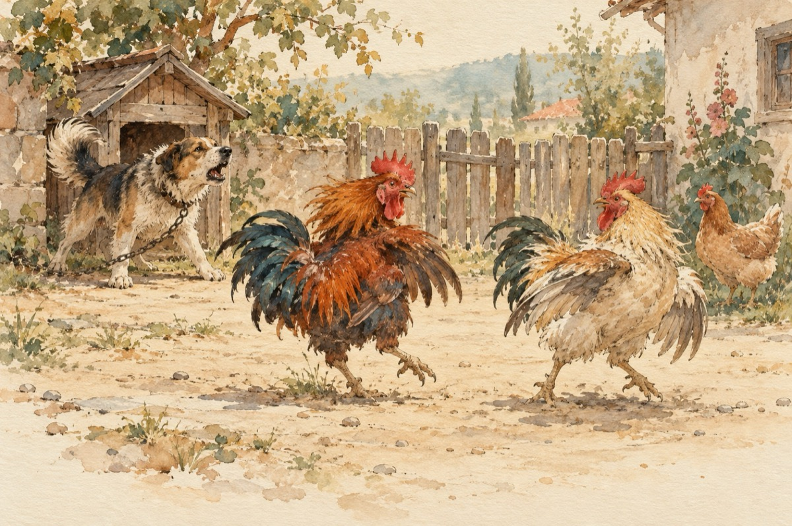

Pentru ce
Asistăm la marea sfadă
Ce are loc în ogradă.
Doi cocoși creastă bătută
Sunt într-o mare dispută!
Mai întâi cântând de zor
Cum ar cere ajutor.
Dorința să și-o împartă
Pentru cine, o moțată!
O găină mai matură
S-a pus cu cocoșii-n gură
Ce-o tot țineți într-o sfadă
Nu v-ajunge o ogradă?
Care-i plină de puicuțe
Tinerele și drăguțe!
Vă așteaptă pe-amândoi
Să le iubiți, nu-n război?!
Cearta a luat amploare
Și s-au luat la bătaie
În ciocuri, gheare-n mănușă
Până la Grivei în cușcă!
Iar acesta supărat
S-a apucat de lătrat
Cocoșii s-au speriat
Și lupta s-a terminat
Moțata cea cu pricină
Spune că nu ea-i de vină
Ce-i dacă ea e frumoasă
Nu poate ieși din casă?...
Vasile Groza